1Log in / log out
Browser (Chrome) > https://connect.hotelsmart.jp/host/login
Before starting front desk work, make sure all staff know how to log in to and log out of the admin screen.
Log in
- In the browser (Chrome), go to
https://connect.hotelsmart.jp/host/login. - Enter your login ID and password, and click 「ログイン」 (Log in).
Log out
- Click the icon (person mark) at the top right of the admin screen.
- Click 「ログアウト」 (Log out).
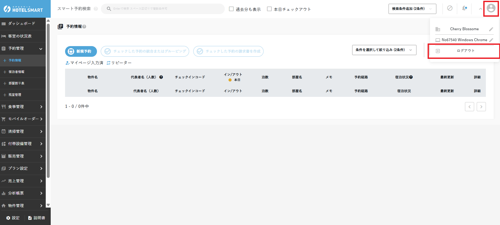
Change your password
These are the steps in the official manual (not yet confirmed at Araki Hotel).
- Click the icon at the top right of the admin screen, then click your account name.
- Scroll to the bottom of the page that opens, and click 「実行する」 (Run) for password change.
- Enter your current password and the new password, and click 「更新しログアウト」 (Update and log out). This logs you out right away, so log in again with the new password.
2Create a reservation (individual reservation)
予約管理 (Reservation management) ＞ one of 【予約情報】 (Reservation information) / 【残室管理】 (Room availability) / 【客室の状況表】 (Room status chart)
How to create a reservation taken by phone or for a walk-in guest. There are three ways into the reservation creation screen.
Which one to use (from the official manual): for reservations on future dates or multi-night stays, start from 【残室管理】 (Room availability); for walk-ins and same-day phone reservations, start from 【客室の状況表】 (Room status chart). This saves you entering the dates and room.
A. From 予約管理 (Reservation management) ＞ 【予約情報】 (Reservation information)
Click 「新規予約」 (New reservation) on the list screen to open the reservation creation screen. The shortcut shown in the screen help is Ctrl+A.
B. From 予約管理 (Reservation management) ＞ 【残室管理】 (Room availability)
Each room type and its number of vacant rooms are shown. Click the remaining-room number for the date and room type you want, and the reservation creation screen opens with that date and room type already filled in.
Key points for reading this screen, according to the official manual (not yet confirmed at Araki Hotel). If the room type is not decided, click the number in ［全部屋タイプ合計］ (Total of all room types). Cells with 0 rooms left are gray, and negative numbers (possible overbooking) are red. Room types with 0 rooms left throughout the display period are not shown. The display period defaults to 2 weeks from today and can show up to 1 month. When you click a number, the reservation creation screen opens in a separate tab (from the official manual).
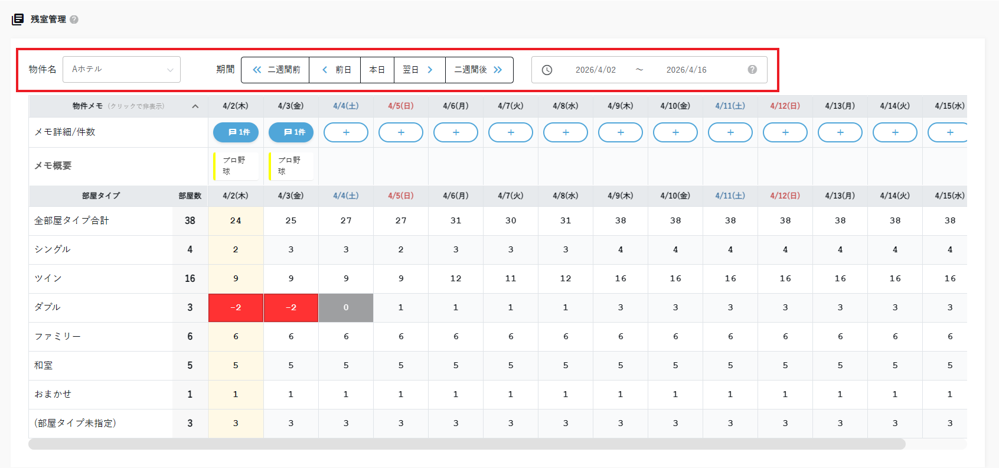
- Add: click the ＋ button, choose the period, title, body and label color, and click 「保存」 (Save). The title appears in the table as a summary of the note. From the second note on, add it from the new-note box that appears when you click the note count.
- View: click the note count or the summary to open it.
- Labels: labels that sort notes by importance or type with colors are created per property in 〖メモラベル管理〗 (Note label management) (open it in a separate tab from ＋ on the note creation screen, set the property, label name, color and display order, and save; editing and deleting are also done here). Talk with the manager before adding labels.
C. From 【客室の状況表】 (Room status chart)
Click a vacant room, and in the pop-up that opens click 「新規予約」 (New reservation). The reservation creation screen opens for the date and room you selected in the room status chart.


<How to enter a reservation>
The current reservation creation screen has two columns. Fill in the left column from top to bottom, then check the right column, to avoid missing anything.
- 代表者情報 (Representative information, left column): Enter the representative's name, name reading (furigana) and contact details (phone number / email address). For guests who have stayed before, you can copy their registered information with the 「引用」 (Import) button (clock icon). The import search matches from the beginning of the text, and importing does not link to the repeat-guest check (from the official manual).
- 共有事項 (Shared notes, left column): Enter guest requests and operator memos as needed.
- 宿泊者情報 (Guest information, left column): Enter guest information from 「宿泊者台帳」 (Guest register), and check which guest is in which room.
- 予約情報 (Reservation information, right column): Enter the basic conditions of the reservation, such as the property name, check-in / check-out and rate plan. Araki Hotel's account has two properties, 「種子島あらきホテル」 (Tanegashima Araki Hotel) and 「種子島あらき別館」 (Tanegashima Araki Annex), so always check the property name. If the property name is left empty, the save button does not appear and you cannot save (from the official manual; not yet confirmed at Araki Hotel).
- 宿泊変更 (Change stay, right column): Set the number of guests, number of rooms, charges and room assignment with 「人数変更」 (Change number of guests), 「金額変更」 (Change amount) and 「部屋変更」 (Change room). For reservations that use a rate plan, enter the room type, number of rooms and number of guests in 「人数変更」 (Change number of guests), then click 「料金計算」 (Calculate charges) to fill in the rate plan charges (from the official manual; not yet confirmed at Araki Hotel). The amount entered in 「金額変更」 (Change amount) is registered as the room charge, so enter extra charges such as options after registering, with 「料金追加」 (Add charge) in the reservation details (from the official manual). If rooms of the same room type have different numbers of guests, split them into rows with 「部屋タイプを追加」 (Add room type) and enter the number of rooms and guests for each. 「前日料金のコピー」 (Copy previous day's charges) in the charge table cannot be used the first time you register. You can check the charge table's shortcuts with the ? mark on the table (from the official manual; not yet confirmed at Araki Hotel).
- 予約経路・予約受付日時 (Booking channel and booking date/time, right column): Enter and check the channel and the date and time the reservation was taken. The booking date/time defaults to the time you opened the new reservation screen (from the official manual). If it differs from the time you took the call, correct it. The default booking channel can be set in 「予約経路初期設定」 (Default booking channel) under the top-right icon ＞ 契約者情報 (Contract holder information) (from the official manual; Araki Hotel's setting is not yet confirmed).
- Automatic emails to the guest (such as booking confirmation) are not sent
- It is not counted in some reports. Tentative group reservations are shown separately in the daily report and other reports
- The status in the 【予約情報】 (Reservation information) list shows 「仮予約」 (Tentative), and you can find it with a filter
- If tentative reservations are included, reservations cannot be merged or grouped

| お客様からのリクエスト (Guest request) | Requests from the guest and similar. Visible only within the reservation |
|---|---|
| オペレーターメモ (Operator memo) | Record of phone calls and similar. Visible only within the reservation |
| リピートメモ (Repeat memo) | A memo carried over to future reservations by the same representative. Write information that needs handling every time, such as allergies |
| 清掃時備考 (Cleaning remarks) | Shared with the cleaning schedule for preparing this reservation. However, it is not shown on the cleaning schedule sheet (making list) (from the official manual; not yet confirmed at Araki Hotel). Pass on what needs to go on the making list by another method as well |
In the 《共有事項》 (Shared notes) section of the reservation details, you can add requests, operator memos and repeat memos. For requests and operator memos, choose a type (通常 / 重要 / チェックイン時 / チェックアウト前 (normal / important / at check-in / before check-out)) when registering. A repeat memo is carried over to future reservations as well. A reservation with an 「重要」 (Important) memo shows 「共有事項をご確認ください。」 (Please check the shared notes.) every time you open it (checked 2026-10-06).


Ctrl+S.
- Check the guest My Page URL and the check-in code used on the tablet (6 digits, assigned automatically to each reservation)
- Check the date and time the last email was sent (Araki Hotel does not use SMS)
- Send an email manually with the 「送信」 (Send) button
Create a reservation by copying an existing one
Click 「予約をコピー」 (Copy reservation) at the top right of the reservation details, and a new reservation screen with the content carried over opens in a separate tab. Re-enter the dates and booking channel, then click 「予約を登録する」 (Register reservation).
The representative's name, room type, number of rooms and number of guests were carried over, but the dates became today, the booking channel 「未選択」 (Not selected), the room number unassigned, and the shared notes empty (checked 2026-10-06). Always re-enter the dates and booking channel.
According to the official manual, when you copy, the check-in date becomes today and the number of nights stays the same as the original reservation. The rate plan, meals and corporate/group are also carried over (an alert appears if the rate plan has expired or the corporate/group is outside its business period). Reservations whose rooms have different stay periods cannot be copied (from the official manual; not yet confirmed at Araki Hotel).


Add use of facilities (banquet hall, parking, etc.)
Scheduled use of facilities other than guest rooms, such as a banquet hall or parking, goes in the 〖付帯設備予約〗 (Facility reservation) section of the reservation details. The facilities themselves are registered by the administrator (Initial Setup). The following are the steps in the official manual (not yet confirmed at Araki Hotel).
- Open the reservation details of the reservation that uses the facility, and click 「利用設備を追加」 (Add facility) in 〖付帯設備予約〗 (Facility reservation).
- Enter the facility, period (time) of use, number of people and remarks, and save. If the number of people exceeds the facility's capacity, a warning appears.
- If you charge a fee for the facility, add the charge separately in 〖料金情報〗 (Charge information) (Scene 5). Adding the facility alone does not add a charge.
You can check facility availability on a timeline table with 「利用状況確認」 (Check usage) in 〖付帯設備予約〗 (Facility reservation), or with 【付帯設備管理】＞【設備利用状況】 (Facility management > Facility usage) in the left menu. Click a booking in the table to go to that reservation's details. If you put the same facility at the same time as another reservation, an overbooking warning appears (from the official manual).
Add instructions for arranged items (amenities, rental items)
Items to prepare in the room (amenities, rental items, etc.) can be left as instructions per room and per day in the 〖手配品情報〗 (Arranged items) section of the reservation details. The list of arranged items (master) is registered by the administrator (Initial Setup). The following are the steps in the official manual (not yet confirmed at Araki Hotel).
- Save the reservation once. In a new reservation that has not been saved, 「予約の保存後に編集できます」 (Can be edited after saving the reservation) is shown and you cannot enter anything.
- In 〖手配品情報〗 (Arranged items) of the reservation details, click 「手配品を追加」 (Add arranged item).
- Choose the item, check the target rooms, and enter the arrangement dates (start date to end date), quantity and memo. You can choose only dates within that room's stay period.
- Check the count in 「○件を反映します」 (○ items will be applied) shown below, and click 「追加する」 (Add).
If the same room, same date and same item already exist, the quantity and memo of that row are overwritten. To fix something, correct the row from 「編集」 (Edit), or delete it with the × at the right end of the row and click 「反映する」 (Apply) (the room name and item cannot be changed). Cancelled reservations and reservations whose check-in date has already been through daily closing are view-only and cannot be edited (from the official manual).
On the day of the arrangement, check everything together in 【予約管理】＞【手配品一覧】 (Reservation management > Arranged item list) in the left menu, specifying the arrangement date and property. The arrangement date defaults to just today, and you can specify up to 31 days. With 「条件を選択して絞り込み」 (Filter by conditions) you can also filter by item, check-in code and room name, and you can save what is displayed with 「csv出力」 (CSV export). If you open it from 「一覧で見る」 (View in list) at the top right of 〖手配品情報〗 (Arranged items) in the reservation details, the list is filtered to that reservation only. For reservations before room assignment, the room name shows 「未割当」 (Unassigned) (from the official manual).
- When you move to a vacant room with a room change or by dragging on the room allocation chart, the arranged items move to the new room too.
- When you swap with a room that has a reservation, a screen appears where you choose 「一緒に移動する」 (Move together), 「元の部屋に残す」 (Leave in the original room) or 「ルームチェンジを中止する」 (Cancel the room change) for the arranged items.
- When you move the check-in date, the arrangement dates shift by the same number of days (a confirmation appears before it runs).
- If you cancel the reservation, the arranged items remain in the reservation but no longer appear in 【手配品一覧】 (Arranged item list).
3Create a reservation (group reservation)
予約管理 (Reservation management) ＞ 【予約情報】 (Reservation information) ＞ 「新規予約」 (New reservation) ＞ 宿泊変更 (Change stay)
There is no separate entry point for group reservations. Open the same new reservation screen as for individual reservations, and set multiple rooms and guests in 「宿泊変更」 (Change stay).
- 代表者情報 (Representative information, left column): Enter the group representative's name and contact details. If you handle corporate information, check where to register it according to the property's rules.
- 共有事項 (Shared notes, left column): Enter information needed for handover, such as the group name, expected arrival and who pays.
- 宿泊者情報 (Guest information, left column): In 「宿泊者台帳」 (Guest register), check which guest is in which room.
- 予約情報 (Reservation information, right column): Enter the basic conditions for the whole group, such as the property name, check-in / check-out and rate plan.
- 宿泊変更 (Change stay, right column): Set the room type, number of rooms and number of guests in 「人数変更」 (Change number of guests), and check the charges per room and per day in 「金額変更」 (Change amount). If you decide the rooms at the time of booking, choose them from 「部屋変更」 (Change room).
- 予約経路・予約受付日時 (Booking channel and booking date/time, right column): Enter and check the channel and the date and time the reservation was taken.
「法人名・団体名」 (Corporate / group name) is a field where you choose from the corporate/group master (checked 2026-10-06).

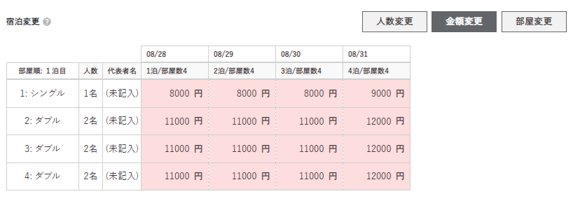


- Room checking in late: click the room on the day before the check-in day → 「この日までの日程を削除する」 (Delete dates up to this day) → 「削除する」 (Delete)
- Room checking out early: click the room on the check-out day → 「この日以降の日程を削除する」 (Delete dates from this day on) → 「削除する」 (Delete)
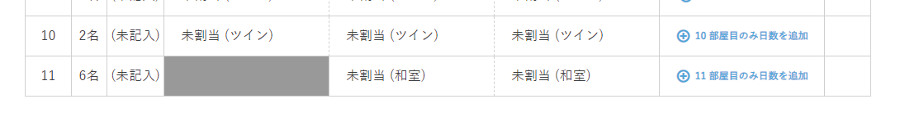
Register a corporate client or group and attach it to a reservation
If you register company or group guests in the corporate/group master, you can attach them to reservations and manage their reservation history, sales and accounts receivable together. The following is the explanation in the official manual (not yet confirmed at Araki Hotel).
- In the left menu, go to 【法人・団体管理】＞【法人・団体一覧】 (Corporate/group management > Corporate/group list) and click 「新規作成」 (Create new).
- Enter the name, your staff contact, category (法人 / 団体 / 旅行代理店 / その他 (corporate / group / travel agency / other)), business start and end dates, properties of business, contact details and so on. For a client who pays in advance, set ［前受金管理］ (Advance payment management); for a client billed later, set ［売掛先設定］ (Accounts receivable settings), and for accounts receivable also choose the payment method and the starting point (check-in / check-out / payment date).
- Click 「法人・団体情報を保存する」 (Save corporate/group information).
- In the 〖お客様情報〗 (Guest information) section of the reservation details, add the corporate client or group and its contact person.
On the corporate/group details screen, you can manage the contact history, list of linked reservations, cumulative sales (only for days that have been through daily closing), contact persons (up to 5; at least 1 required) and memos (from the official manual).
For drawing down advance payments and registering accounts receivable (later payment), see Scene 6, "Corporate/group advance payments and accounts receivable (later payment)".
4Changing reservations (by pattern)
Reservation details page ＞ 予約情報 (Reservation info)／宿泊変更 (Change stay)／宿泊者情報 (Guest info)／設定 (Settings)／予約詳細のステータス（キャンセル） (reservation details status (cancel))／部屋割り当てのルームチェンジ (room change in room assignment)／予約を分割 (Split reservation) ＋ スマート予約検索 (Smart reservation search)／【予約情報】の一覧 (the 【予約情報】 list) (find, merge and group reservations)
This scene collects the most common change patterns: changing the stay period, adding or removing rooms or changing rooms mid-stay, changing guest information, changing the rate plan, and more. It also covers how to cancel a reservation. In addition, it covers how to find reservations, room changes (swapping rooms), splitting a reservation, and merging and grouping reservations.
Finding a reservation
Enter a name or check-in code in 「スマート予約検索」 (Smart reservation search) at the top of the screen. To add conditions, use 「検索条件追加」 (Add search conditions). In the 【予約情報】 (Reservation info) list, 「条件を選択して絞り込み」 (Select conditions to filter) lets you filter by conditions such as checking in today or registered today.


The items Smart reservation search can find (memo text, room numbers and so on), the conditions and match methods of the filter search, and the meaning of the marks in the reservation list are summarized in Reservations, changes and billing, "1. Searching for a reservation" (from the official manual).
Changing the stay period
You can change it from the 《予約情報》 (Reservation info) section. For the check-in date, click it, enter the new date in the popup that appears, and press 「移動する」 (Move). The popup shows the fixed text 「日程の移動に合わせて料金の利用日が変更されます」 (The usage dates of the charges change along with the date move), and there was only one checkbox, 「ブロックや他の予約との重複が発生する部屋割りを解除する」 (Release room assignments that overlap with blocks or other reservations), checked by default (checked 2026-10-05). Uncheck it only if you do not need it. Moving the check-in date shifted the whole stay while keeping the number of nights, and pressing 「移動する」 (Move) saved it immediately (checked 2026-10-05). For the check-out date, enter it directly or choose it from 「カレンダー入力」 (Calendar input). Changes to the check-out date or number of nights were not saved until you pressed 「変更を保存する」 (Save changes), shown at the bottom of the screen (checked 2026-10-05). When there are several rooms with different periods per room, change each one through 「部屋毎に設定する」 (Set per room).


When there is a gap (the room is vacated for only some days in the middle of a multi-night stay), in 「部屋変更」 (Change room) of 《宿泊変更》 (Change stay), click the room on the day of the gap, choose 「日程削除」 (Delete dates) → 「この日のみを削除する」 (Delete this day only), and press 「削除する」 (Delete) (from the official manual). The date deletion screen has four options for what to delete: 「この日のみ」 (this day only), 「この日までの」 (up to this day), 「この日以降の」 (from this day on) and 「一連の日程」 (the whole series of dates); for a gap, choose 「この日のみ」 (this day only) (from the screen example in the official manual). Whether you first need to press 「割当解除」 (Unassign) has not been checked on the real screen at Araki Hotel.
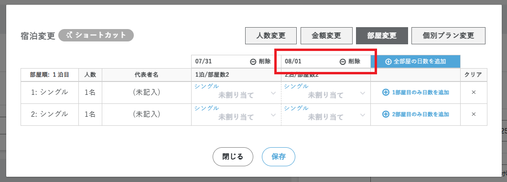
You can also extend the check-out date from 「部屋変更」 (Change room) in 《宿泊変更》 (Change stay) (checked 2026-10-09).
- Press 「宿泊変更」 (Change stay) in 《予約情報》 (Reservation info) and open 「部屋変更」 (Change room).
- Press 「全部屋の日数を追加」 (Add days to all rooms) at the top right.
- On the 「宿泊日数追加」 (Add nights) screen, enter the number of days to add (default: 1 night). The screen showed 「全部屋に追加する日数を入力してください」 (Enter the number of days to add to all rooms) and 「※部屋料金には前日指定が反映されます」 (*The previous day's setting is applied to the room charge).
- Press 「追加する」 (Add). The same room is also set for the added days.
- Press 「保存」 (Save) to confirm.
To extend room by room, use 「1部屋目のみ日数を追加」 (Add days to room 1 only) to the right of each row (we confirmed the button exists). In the example below, the same room (414) was also set for the added 10/24, and after saving the stay became 10/23 to 10/25, 2 nights (checked 2026-10-09).


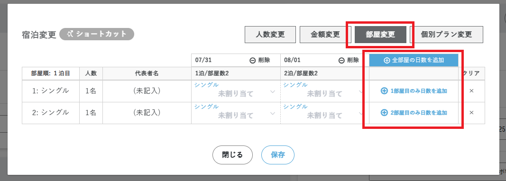
TL-Lincoln (two-way) and inventory
Araki Hotel is connected to the site controller "TL-Lincoln" with two-way integration. With two-way integration, OTA reservations are not only imported; the inventory (rooms remaining) on the HOTEL SMART side is also sent back to TL-Lincoln. In other words, inventory is managed in 【販売在庫】 (Sales inventory) in HOTEL SMART, and TL-Lincoln is the side that receives those numbers (from the official manual).
- The following operations automatically send the changed inventory to TL-Lincoln: creating, changing or canceling a reservation, blocking a room (Scene 9), and changing the adjustment count. It takes up to 15 minutes to take effect (from the official manual).
- The inventory sent is calculated as "sales inventory = rooms remaining + adjustment count", and rooms remaining as "total rooms − reservations − blocks". If the result is negative, 0 is sent (from the official manual).
- While two-way integration is active, if you change the rooms remaining by hand on the TL-Lincoln screen, it is overwritten with the HOTEL SMART number at the next update. Increase or decrease inventory in HOTEL SMART (from the official manual).
- Inventory is not reflected in slots set to 「照会のみ」 (inquiry only) on the TL-Lincoln side (from the official manual).
- TL-Lincoln's online sales use inventory per 「ネット室タイプグループ」 (online room type group), and sales sites in the same group share the rooms remaining. Inventory cannot be split per sales site (from the official manual).
Check the inventory numbers in 【販売在庫】＞【販売在庫カレンダー】 (Sales inventory > Sales inventory calendar) in the left menu. Choose the property and period and press 「在庫数を表示する」 (Show inventory) to see the inventory per sales room type per day. Press an inventory number to see its breakdown (rooms remaining and adjustment count). Days with no inventory created show a ⚠ mark; on those days no inventory is sent to TL-Lincoln and rooms cannot be sold. Days with sales stopped (closed out) are shown in gray (from the official manual; not yet confirmed on Araki Hotel's screen).
Adding or removing rooms
Press 「宿泊変更」 (Change stay) in the 《予約情報》 (Reservation info) section of the reservation details, and in 「人数変更」 (Change number of guests) press 「部屋タイプを追加」 (Add room type). Enter the room type, number of rooms and number of guests per room to add, and press 「保存」 (Save). The added room has no room number assigned, so choose a room in the room assignment of the reservation details or use 「おまかせ割り当て」 (Auto assign). To remove a room, on the same screen press 「×」 on the row to remove and press 「保存」 (Save) (checked 2026-10-05).


Changing rooms mid-stay
To move rooms partway through a multi-night stay, open ［部屋変更］ (Change room) in 「宿泊変更」 (Change stay), click the room on the date the room changes, choose the new room and save.


Room change (swapping rooms)
In the room assignment of the reservation details, press the swap icon next to the room number to open the 「ルームチェンジ」 (Room change) screen. Choose the new room and press 「変更する」 (Change). If you choose a room that has a reservation, the rooms are swapped with that reservation. Pressing 「変更する」 (Change) applied the change immediately, without confirmation (checked 2026-10-06). If there is a past reservation with the same name, 「リピートユーザーの可能性があります。」 (This may be a repeat user.) is shown under the lead guest's name (checked 2026-10-09).


You can also do a room change from the room status chart. Click a room in the status chart and press 「ルームチェンジ」 (Room change) in the details; the same 「ルームチェンジ」 (Room change) screen opens as from the reservation details. Pressing 「変更する」 (Change) applies it immediately (checked 2026-10-09).


Splitting a reservation
To split a multi-room reservation into one reservation per room, press 「予約を分割」 (Split reservation) at the top right of the reservation details. Check the lead guest's name and contact details for each resulting reservation, then press 「保存」 (Save).
When you save, confirmation messages appear: 「分割後の代表者連絡先が未入力です。予約の分割を継続しますか？」 (The lead guest's contact details after the split are not entered. Continue splitting the reservation?) (when the contact details are empty) and 「この予約は削除され、2件の新しい予約が作成されます。分割を実行しますか？」 (This reservation will be deleted and 2 new reservations will be created. Run the split?). The original reservation is deleted, and new check-in codes are issued. Requests and the operator memo were carried over to all the split reservations, and the repeat memo only to the lead guest's reservation (checked 2026-10-06).


For a reservation with 3 or more rooms, you can drag and drop rooms on the split screen to keep some rooms together in one reservation (checked 2026-10-09). When you open 「予約を分割」 (Split reservation) for a 3-room reservation (415, 417, 418), 3 proposed rows appear, one per room. Drag a room-name label (e.g., 418) to another row, and that row becomes 2 rooms (417 and 418, 2 guests); the emptied row shows 「（ここにドラッグ＆ドロップしてください）」 (Drag and drop here).
After saving, there were 2 reservations: one for 415 and one for 417 and 418. The original reservation is deleted, and new check-in codes are issued. The operator memo keeps 「［ホスト操作：予約分割により作成］」 ([Host operation: created by reservation split]) along with the original and new check-in codes (checked 2026-10-09).


- The reservation details have unsaved changes (save first)
- Cancelled, or all rooms are already checked in (it can be split if only some rooms are checked in)
- The check-in date has already gone through daily closing
- There is a guest not assigned to a room / a charge with no room specified / a payment spanning several rooms
- The guest moves rooms partway through the stay (mid-stay move)
- The site controller auto-update is still 「自動更新中」 (Auto-updating)
- For rows with 「メールを再送信する」 (Resend email) checked, the sending records for the reservation confirmation, check-in guide and reminder are reset, and these emails are queued to be sent again to the new lead guest. Whether and when they are sent follows the property's email settings.
- In addition to requests and the operator memo, cleaning notes and meal notes are also carried over. The reservation's additional information goes to the first reservation in the list.
- Color labels attached to memos and receipt requests received through the guest My Page are not carried over. Re-add them after the split if needed.
- If all the rooms in a split reservation are checked in, that reservation is created as checked in.
- A split cannot be undone. There is no function to restore the original single reservation, so check the contents carefully before saving.
Merging and grouping reservations
In the list in 【予約情報】 (Reservation information), check the reservations you want to combine and press 「チェックした予約の統合またはグルーピング」 (Merge or group checked reservations). The buttons 「これらの予約を統合する」 (Merge these reservations) and 「これらの予約をグルーピングする」 (Group these reservations) appear.
「統合」 (Merge) joins reservations with consecutive dates (one reservation's check-out date is another reservation's check-in date). If the conditions are not met, 「これらの予約は統合できません」 (These reservations cannot be merged) appears. 「グルーピング」 (Grouping) combines reservations with the same dates into one (checked 2026-10-06).


- Different property, booking channel or corporate/group account
- Includes a provisional reservation, or includes charges or payments already through daily closing
- (Grouping) Includes a checked-in reservation
- (Merging) The number of guests or rooms differs between reservations
When merging, confirmation appears twice before it runs, and a record is left in the operator memo when it finishes. The merged dates run from the earliest check-in date to the latest check-out date. The check-in code and room information of the reservation with the earlier check-in date are kept. For reservations prepaid via an OTA, the start date for accounts receivable changes to the merged check-out date. Not only grouping but merging also cannot be undone.
- Reservations with different booking channels (booking sites) cannot be merged or grouped, because one reservation cannot have more than one booking channel. Keep them as separate reservations and handle them by, for example, assigning the same room or manually setting the later reservation as checked in.
- Combined reservations can be separated with Splitting a reservation, but they do not return completely to their original state.
- If site controller reservations are being grouped automatically and this causes problems, it can be changed in the integration settings (disconnect the integration once, and when reconnecting choose 「別々の予約として登録する」 (Register as separate reservations)). This affects the whole integration, so the manager consults support.
Checking and changing guest information
Click 「宿泊者台帳」 (Guest register) in 《宿泊者情報》 (Guest information) to check and edit guest information in a list, assign rooms, and add or remove guests.

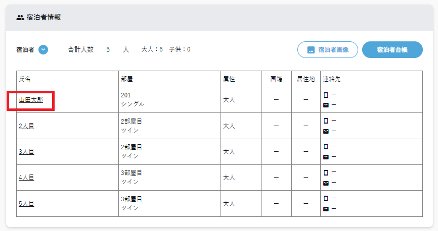
From the 「引用」 (Copy from past guest) icon in the guest register, you can copy the information of a guest who stayed before. When you press 「引用する」 (Copy), 「以下の宿泊者情報を設定しますか？」 (Set the following guest information?) appears with the information to be copied. After copying, press 「保存」 (Save) in the register (checked 2026-10-06).
According to the official manual, copying fills in name, phonetic name (furigana), email address, phone number, postal code, prefecture, address, nationality, gender and child category. If you also enter a company name in the search, only guests matching both the name (or other fields) and the company name appear. 「詳細を開く」 (Open details) in the search results lets you check the source reservation in a new tab (from the official manual; not yet confirmed at Araki Hotel).


Checking repeat-guest detection and judging it manually
HOTEL SMART automatically detects whether a reservation belongs to a repeat guest (a guest who has stayed before). When detected, the lead guest's guest information and repeat memo are carried over to the next reservation. The following is the official manual's explanation (at Araki Hotel, only the 「リピートユーザーの可能性があります。」 (Possible repeat user.) display has been confirmed; see the image in Room change).
| Fields used for detection | The lead guest's name, email address and phone number. Spaces between family and given names and hyphens in phone numbers do not matter |
|---|---|
| Automatically marked as repeat | Same name, and also the same email address or phone number. A repeat mark appears under the lead guest's name |
| Repeat not judged (possible repeat) | Only one of name, email address or phone number matches. 「リピートユーザーの可能性があります」 (Possible repeat user) appears under the lead guest's name |
| When detection runs | When a reservation is imported from the site controller, and when a reservation is created manually |
| What is carried over | The lead guest's name, address, email address, phone number, nationality, date of birth, occupation, passport image, face photo and ID. The information with the newer update date is kept. Companions are not checked (for companions, use Copy past guest information) |
- Press the 「リピートユーザーの可能性があります」 (Possible repeat user) display (under the lead guest's name in the reservation list or reservation details) to open the judgment screen. You can also check and judge unjudged reservations by pressing the count for 「リピート未判定予約数」 (Reservations with repeat not judged) on the dashboard.
- If you can confirm it is the same guest, press 「この代表者の予約履歴と情報を統合する」 (Merge information with this lead guest's reservation history) on the matching reservation history. If it is a different person, press 「どの予約履歴とも情報を統合しない」 (Do not merge information with any reservation history).
Changing the rate plan
Select the new rate plan in [プラン] (Plan), then press the 「プランに合わせる」 (Match plan) button in [お食事] (Meals) and save. After saving, you can change the charges to match the new rate plan from 「料金情報の再登録」 (Re-register charge information) in the 《料金詳細》 (Charge details) section. The 「プランに合わせる」 (Match plan) button in ［お食事］ (Meals) is a step that does not appear in the official manual, and it has not been confirmed on Araki Hotel's real screen either.
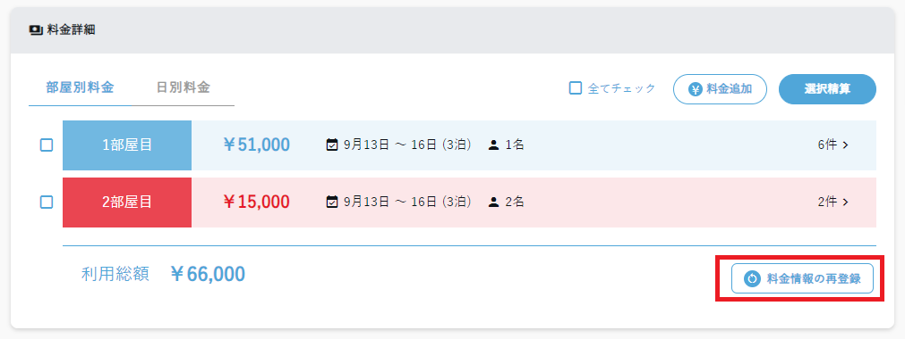
To change the rate plan only for some days or some guests, use 「宿泊変更」 (Change stay) → 「個別プラン変更」 (Individual plan change). Even in this case, the first day's rate plan is used for screen displays and totals. Meal details can be changed per day and per guest from 「食事変更」 (Change meals) in 〖予約情報〗 (Reservation information) (from the official manual; not yet confirmed at Araki Hotel).
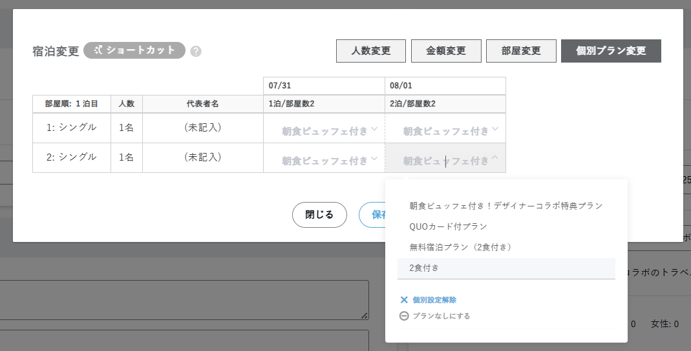
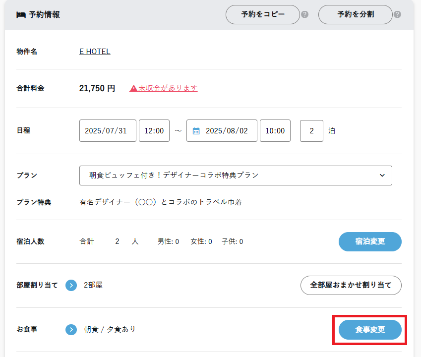
Stopping the site controller auto-update
According to the official manual, pressing 「停止する」 (Stop) at ［サイトコントローラー自動更新］ (Site controller auto-update) (status shown as 「自動更新中」 (Auto-updating)) in the 〖共有事項〗 (Shared notes) section of the reservation details lets you change even site controller reservations from the admin screen (official articles from 2025 onward also show it this way). An earlier version of this manual said "in ［サイトコントローラー設定］ (Site controller settings) under 《設定》 (Settings) on the right, 『この予約の自動更新を停止する』 (Stop auto-update for this reservation)", but that may be the wording of an older screen. The location and button name on Araki Hotel's real screen are not yet confirmed. When you stop it, a record of the stop is automatically left in the operator memo, so you can check later who stopped it and when (from the official manual).
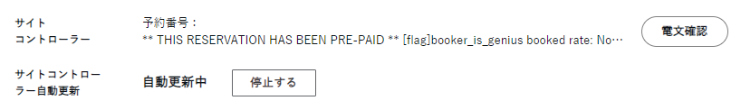
Cancelling a reservation
Front desk staff can cancel reservations at their own discretion.
- Press the status at the top right of the reservation details (「未チェックイン ▼」 (Not checked in ▼)) and choose 「キャンセルする」 (Cancel).

- Check the details on the confirmation screen and press 「キャンセルする」 (Cancel).


- After cancelling, always report the reservation name, dates and reason for cancellation to the manager.
Unlike cancellation, the confirmation screen for 「削除する」 (Delete) shows no warning. For a reservation with no room assigned, 「チェックイン済みにする」 (Set as checked in) did not appear in the status menu (checked 2026-10-06).

5Registering charges (sales)
Bottom of the reservation details page < 料金・精算情報 (Charges and payment information) > 料金詳細 (Charge details)
Charge details can be switched between 「部屋別料金」 (Charges by room) and 「日別料金」 (Charges by day). They are shown in expandable rows per room / per day, and you can register charges at each level.
- Press 「料金追加」 (Add charge) in the 《料金・精算情報》 (Charges and payment information) section.
- In the 《新規料金情報》 (New charge information) that appears, enter the charge item, date of use, room, unit price, quantity, payment (shown only if payment integration is set up) and notes, then save.


| 料金科目 (Charge item) | Sales breakdown category, such as accommodation fee or meal charge |
|---|---|
| 利用日／部屋 (Date of use / Room) | The same content can be registered from either the Charges by room or the Charges by day view |
| 単価・数量 (Unit price / Quantity) | Breakdown of the amount. The subtotal is calculated automatically |
| 決済 (Payment) | Shown and selectable only if payment integration is set up |
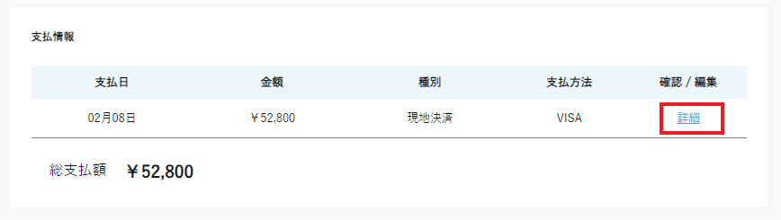
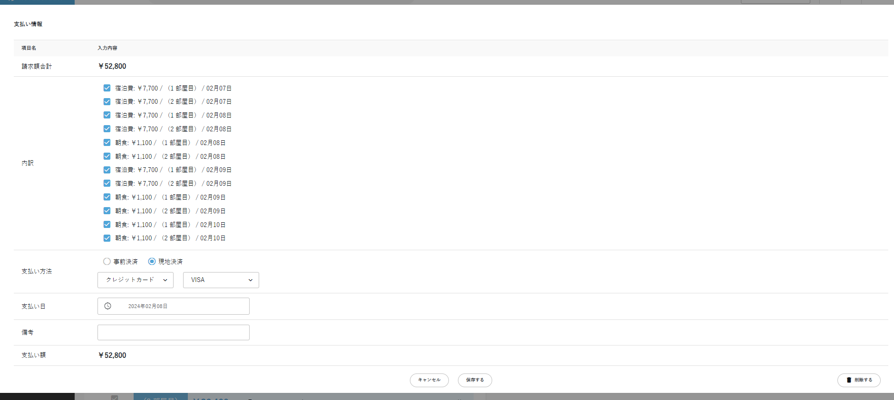
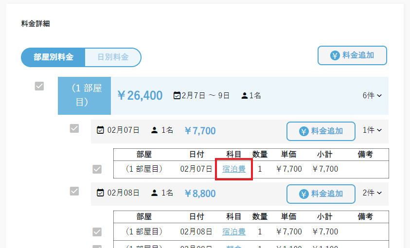
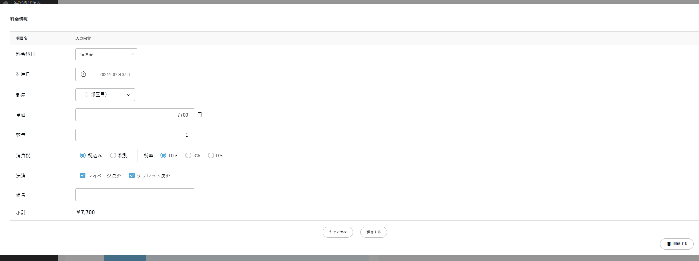
6Registering payments
Bottom of the reservation details page ＜ 料金・精算情報 (Charges and payment information) ＞ 支払情報 (Payment information) ＋ 売上管理 (Sales management) ＞ 予約外_料金・精算機能 (Non-reservation charges and payments) (sales not linked to a reservation)
You can settle payments in three ways: 「一括精算」 (Bulk payment), 「料金選択して精算」 (Pay selected charges) and 「金額指定して精算（特殊精算）」 (Pay a specified amount (special payment)). This scene also covers registering and settling sales that are not linked to a reservation (予約外_料金・精算機能 (Non-reservation charges and payments)).
Bulk payment / paying selected charges
- To settle the whole outstanding balance, click 「一括精算」 (Bulk payment). To settle specific charges, select those charges and click 「選択精算」 (Pay selected).
- Select the payment method and type, enter whether points are used and the payment date, then click 「精算する」 (Settle). You can also reselect the charges to settle here.


The payment method types are 「現金／決済代行サービス／クレジットカード／電子マネー／ID決済／行政補助金／その他」 (Cash / Payment agency service / Credit card / E-money / ID payment / Government subsidy / Other). The payment date defaults to today. When we saved with a date outside the stay period, a confirmation appeared: 「支払日が宿泊期間外に指定されています。保存を続行してよろしいですか？」 (The payment date is outside the stay period. Continue saving?) (checked 2026-10-06).


To correct a charge that has already been paid, you must first delete the payment (see the caution in Scene 5).
Paying a specified amount
- Click 「特殊精算（金額指定）」 (Special payment (specify amount)).
- Enter the breakdown (料金科目指定 (By charge item) / 金額指定 (By amount) / 部屋指定 (By room)), payment method (事前決済 (prepaid) / 現地決済 (pay at the hotel)), payment date and amount, then click 「保存する」 (Save).


Sales not linked to a reservation (予約外_料金・精算機能 (Non-reservation charges and payments))
Use this for sales not linked to a reservation, such as cancellation fees and shop sales, and for amount adjustments after the daily closing (from the official manual). A statement or receipt cannot be issued from a non-reservation bill (from the official manual).
- Open 「売上管理」 (Sales management) → 「予約外_料金・精算機能」 (Non-reservation charges and payments) in the left menu and press 「新規作成」 (Create new).
- Select the property, booking channel and corporation/group, then press 「次へ」 (Next).
- Register the charge with 「料金情報を追加する」 (Add charge information).
- Register the payment with 「精算をする」 (Settle), then return to the list with 「閉じる」 (Close).


- The booking channel and corporation/group you choose when creating new specify the receivable account for that bill. If you attach a corporation or group, you can also use advance payment drawdown and later payment ("Corporate and group advance payments and accounts receivable" below).
- Sales are recorded on the use date. Accounts receivable are recorded on the payment date, regardless of the corporation's or group's start-timing setting. If the use date or payment date is blank, it is recorded on the date of entry.
- The list can be filtered by period and property. The non-reservation list cannot be exported to CSV. In the payment information CSV, reservation and non-reservation amounts are combined (on the daily closing screen they are separate rows).
Entering refunds


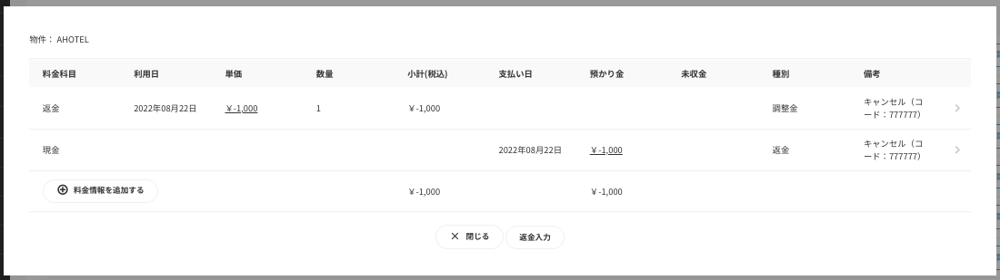
Checking in-house outstanding balances at once (滞在中精算チェックリスト (In-house payment checklist))
Open 【売上管理】→【滞在中精算チェックリスト】 (Sales management → In-house payment checklist) and select a property and date; the reservations in house on that day (including reservations whose check-out date is that day) are shown one per row (checked 2026-10-10).
The columns are check-in code, lead guest name, room number, check-in, check-out, total charges, total paid, total advance payment drawn down, outstanding balance, corporation/group name and advance payment balance. Outstanding balances are shown in red. Click a check-in code to go to the reservation details. With 「csvダウンロード」 (CSV download) at the top right, you can save the same content as a CSV (checked 2026-10-10).
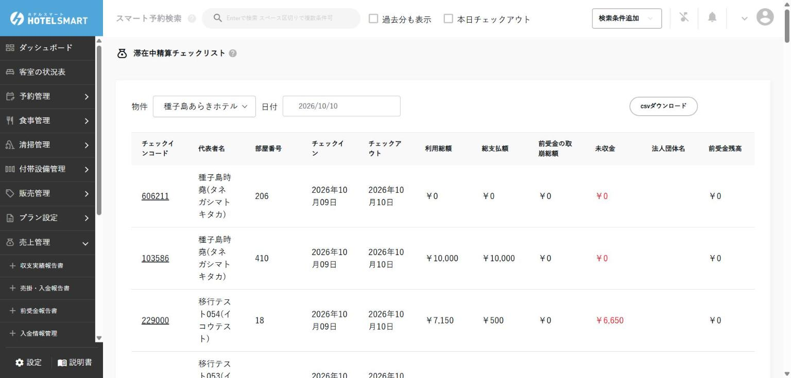
Corporate and group advance payments and accounts receivable (later payment)
This covers payment when a corporate or group customer pays money in advance (advance payment) and when they are billed later in one lump (accounts receivable). The reservation must have a corporation or group attached (Scene 3 "Register a corporation or group and attach it to a reservation"). The following is the official manual's explanation (not yet confirmed at Araki Hotel).
| Using an advance payment (reservation) | On the payment screen, check 「前受金の取り崩し」 (Use advance payment) under ［支払い方法］ (Payment method), select the drawdown date and press 「精算する」 (Settle). To draw down per use date, check 「利用日を取崩日として分割登録」 (Register separately with the use date as the drawdown date) |
|---|---|
| Using an advance payment (non-reservation) | Attach the corporation or group in 「新規作成」 (Create new) of the non-reservation charges and payments, then on the outstanding balance payment screen set ［支払い方法］ (Payment method) to 「前受金の取り崩し」 (Use advance payment) and save |
| Putting on accounts receivable (reservation) | For a reservation with a receivable corporation or group attached, choose 「後日決済」 (Pay later) when settling. For accounts whose start timing is check-in/check-out, select the registration date; for accounts whose start timing is the posting date, select the posting date; then press 「精算する」 (Settle). To post per use date, check 「利用日を計上日として分割登録」 (Register separately with the use date as the posting date) |
| Putting on accounts receivable (non-reservation) | Attach the corporation or group in 「新規作成」 (Create new), then on the outstanding balance payment screen set ［支払い方法］ (Payment method) to 「後日精算」 (Pay later) and save |
Register receipt of an advance payment (deposit) from 「前受金情報作成」 (Create advance payment information) in 〖前受金管理〗 (Advance payment management) on the corporation's or group's details screen. Check advance payment deposits and drawdowns in 【売上管理】＞【前受金報告書】 (Sales management > Advance payment report) (it can also be opened from the corporation's or group's details) by selecting the corporation/group, property and period. Drawn-down amounts appear in the report and balance only after the daily closing and totals for the drawdown date are done. Corporations and groups with an insufficient advance payment balance are shown on the daily closing screen. Advance payment deposits can also be checked in the income and expenditure report (from the official manual).
Accounts receivable are totaled in 【売上管理】＞【売掛・入金報告書】 (Sales management > Accounts receivable and deposit report). When a later deposit arrives, enter the deposit information with 「新規作成」 (Create new) in 【売上管理】＞【入金情報管理】 (Sales management > Deposit information management) and press 「変更を保存する」 (Save changes); you can then check the balance in the accounts receivable and deposit report. Check a registered deposit with 「詳細を見る」 (View details) in the list (from the official manual).
7Issuing statements and receipts
Reservation details page ＞ 利用明細・領収書 (Statement and receipt)
Issue them from the 《利用明細・領収書》 (Statement and receipt) section. What is registered in 《料金詳細》 (Charge details) at the time of creation is reflected on the screen.
Creating
- Select the target room (for a multi-room reservation, check only the relevant room). To issue with the charges split by rate plan combined into the accommodation charge, check 「プラン仕訳料金を統合する」 (Combine plan-split charges). Then press 「明細・領収書作成」 (Create statement/receipt).

- On the 《利用明細・領収書作成》 (Create statement/receipt) screen, check the language setting (Japanese / English / Chinese / Korean), tax category, addressee, honorific, arrival date, departure date, remarks, line items, room number, use date, amount, receipt amount and description (purpose), then press 「発行する」 (Issue). If anything needs changing, correct it here.


Receipts can also be issued from the room status chart (checked 2026-10-09). Click a room in the status chart and press 「領収書発行」 (Issue receipt) in ［料金情報］ (Charge information) in the details; the 「領収書発行」 (Issue receipt) screen opens. The screen's fields are language (Japanese / English / Chinese / Korean), addressee, honorific (様), arrival date, departure date, remarks, items (charge items and payment items), amount used, amount deposited, amount billed and receipt amount. Issue with 「発行する」 (Issue).


Receipts issued from the status chart were also kept in the history (statement number, created date and time, download) of 《利用明細・領収書》 (Statement and receipt) in the reservation details. 「領収項目に絞る」 (Limit to receipt items) was not on the status chart screen but a checkbox in the 《利用明細・領収書》 (Statement and receipt) section of the reservation details (below 「プラン仕訳料金を統合する」 (Combine plan-split charges)). What happens when it is checked is not yet confirmed (checked 2026-10-09).

Checking and issuing
Created documents are listed in 《履歴》 (History), and you can check the PDF from 「ダウンロード」 (Download). Download it and send it by email or print it to hand to the guest. At this property, the downloaded PDF is given by email or in print. The official manual also says there are functions for downloading from the guest My Page (enabled in the property's 【お客様マイページ設定】 (Guest My Page settings)) and for attaching the PDF to the check-in completion email (【自動メール配信設定】 (Automatic email settings)). How these are set at Araki Hotel is not yet confirmed; if they are used, the administrator sets them up.
- After check-out, guests can issue it themselves from the My Page home screen, entering their own addressee. If there is no receipt amount, it is a statement only.
- Which documents can be downloaded on the My Page can be switched between allowed and disabled per document in 《履歴》 (History). If the front desk has recreated a document, disable the old one.
- If you set 「請求明細書の添付」 (Attach billing statement) for check-in in 【自動メール配信設定】 (Automatic email settings) to 「自動送信時に添付する」 (Attach when sent automatically), the PDF is attached to the check-in completion email. It includes all charges and payments at the time it is sent. The property's statement settings (such as combining plan-split charges) also apply to this attachment.

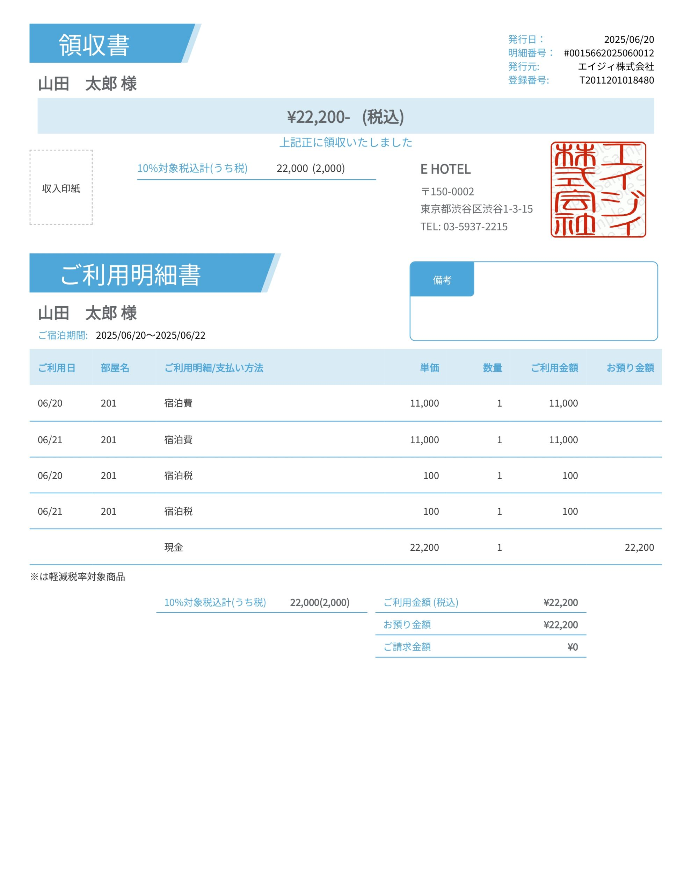
Reissuing
To reissue the same content, press 「現在の日時で再作成」 (Recreate with the current date and time) (the official manual writes it as 「現在の日時で再作成する」; the label on the real screen is not yet confirmed). The statement number stays the same and a new sub-number is assigned.
Corrections and additions
To issue something with different content from what was already issued, create a new one from 「明細・領収書作成」 (Create statement/receipt). A new statement number is assigned. When there are several history entries, manage them by checking the 有効 (Valid) column.
8Check-in / check-out
【客室の状況表】 (Room status chart)
How to check guests in and out in person at the front desk. You do this on 【客室の状況表】 (Room status chart). When you cannot do it from the chart, for example before the check-out date, use the status in the reservation details (see the caution below).

- Ask the guest's name, and find the room for the reservation by eye or by typing the guest's name into the ［当日分の予約検索］ (Search today's reservations) field on the screen (when the search finds it, the room is highlighted). Besides the name, you can also search by group name, the name and furigana (phonetic reading) of the representative or guests, the OTA reservation number, or the room name (from the official manual). Reservations without a room assignment are not shown on the chart, so if you cannot find it, search in 【予約情報】 (Reservation information) (from the official manual).
- Click the room to open its details.
- Check what is written, and handle anything that needs action at the front desk. If there is nothing, press 「チェックイン」 (Check in) or 「チェックアウト」 (Check out) to change the status.


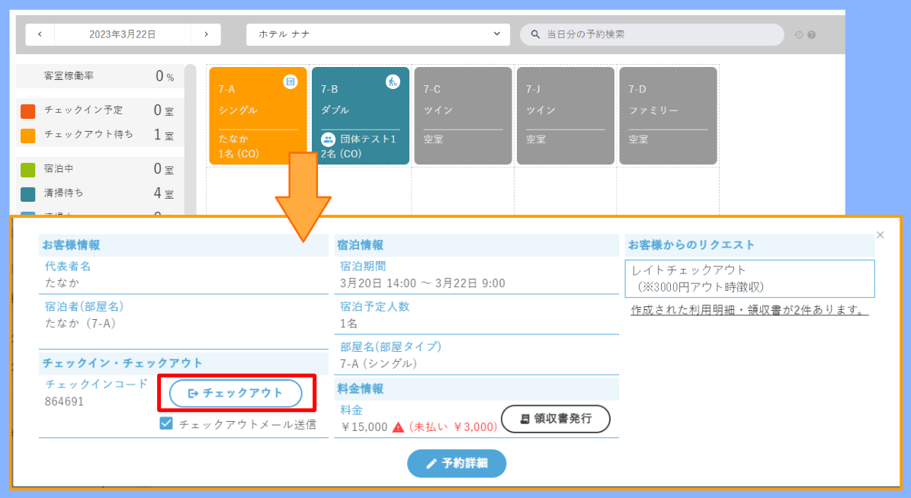


| メモ (Memo) | Shown when anything is entered in ［お客様からのリクエスト］ (Requests from the guest), ［オペレーターメモ］ (Operator memo) or ［リピートメモ］ (Repeat memo) |
|---|---|
| 料金情報 (Charge information) | Shows the total charges and, if an outstanding balance remains, that amount in red. To see details or register payment of the outstanding balance, go to 「予約詳細」 (Reservation details) and use the 《料金情報》 (Charge information) section |
| チェックインメール送信／チェックアウトメール送信 (Send check-in email / Send check-out email) | If you press 「チェックイン」 (Check in) or 「チェックアウト」 (Check out) with this checked ✓, the matching email is sent at that moment. If automatic sending is set to 「行わない」 (Do not send) in 【自動メール配信設定】 (Automatic email settings), no email is sent even when this is checked |
| 部屋のアイコン (Room icons) | According to the official manual, icons like these appear on rooms in the chart: outstanding balance (￥), receipt needed (the guest answered on guest My Page that they need a receipt), guest register incomplete (required items on My Page not entered), group (a reservation with several rooms), and so on. Before check-in, you can pick up outstanding balances, whether a receipt is needed, and incomplete registers here. In the details, 「マイページ入力済み」 (My Page completed) is shown when My Page input is done, and an alert appears at check-in if there is an outstanding balance (from the official manual. not yet confirmed at Araki Hotel) |
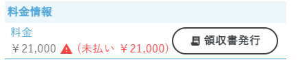
Check-in by room (reservations with several rooms)
For a reservation with several rooms, you can choose 「チェックイン済みにする」 (Mark as checked in) from the status at the top right of the reservation details and select only the rooms to check in. To undo it, use 「チェックインを取り消す」 (Cancel check-in) in the same menu and select the rooms to undo.
The check-in notification can be sent only when all rooms are selected. If you run it before the check-in date, a confirmation appears: 「チェックイン日ではありませんが、チェックインしますか？」 (It is not the check-in date. Check in anyway?) (checked 2026-10-06).
At the Annex, ［部屋別チェックイン］ (Check-in by room) was already allowed, and check-in by room could be used (checked 2026-10-06).
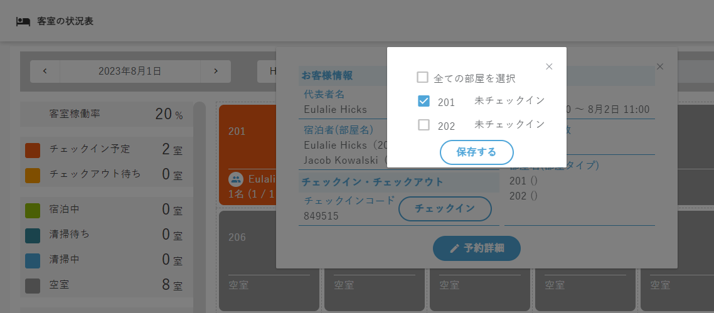


Checking in only the guests who arrived first on the tablet (check-in by guest)
When guests on a reservation for several people arrive at different times, tablet self check-in lets you skip input for those who have not arrived yet and check in. This can be used when ［宿泊者別チェックイン］ (Check-in by guest) is set to 「許可する」 (Allow) in the property settings. Below is the flow in the official manual (the setting and screens at Araki Hotel are not yet confirmed).
- Start check-in as usual with the check-in code or QR code, and enter the representative's information.
- On the companion input screen, press 「全員がお揃いでない場合はこちら」 (If not everyone is here).
- Uncheck the people who will come later, press 「OK」, and follow the on-screen guidance until check-in is complete.
- People who arrive later check in on the tablet with the usual steps.
A reservation checked in without everyone present gets the status 「一部チェックイン」 (Partially checked in) on the admin screen (from the official manual).
Downloading the stay status list / guest cards
Press 「滞在状況表ダウンロード」 (Download stay status list) at the top right of the room status chart, and the stay status list for the date and property shown is downloaded as a CSV file. No confirmation screen appeared (checked 2026-10-07).
The file name contains the date and property name, like 「宿泊滞在状況表2026年10月07日_種子島あらき別館.csv」 (stay status list, 2026-10-07, Tanegashima Araki Annex). There is one row per room, and the character encoding is UTF-8 with BOM, so it opens in Excel. Rooms with no stay contain only the room name and room type (checked 2026-10-07).
If the text is garbled, do not open it by double-clicking; import it with Excel's ［データ］＞［テキストまたはCSVから］ (Data > From Text/CSV) instead (from the official manual).
| Room | Room name, room type |
|---|---|
| Reservation | Check-in code, representative's name, rate plan |
| Guests | Guest names, number of guests (breakdown by men, women and children) |
| Dates | Night number, check-in date and check-out date |
| Meals | Breakfast, lunch, dinner |
| Repeat | Number of repeat stays, repeat memo, previous stay |
| Other | Receipt, memo |
- Breakfast is for the next morning after the selected date; lunch and dinner are for the selected date. Be careful not to miscount when telling the kitchen.
- Reservations without a room assignment do not appear as rows. Finish room assignment first.
- If reservations overlap in the same room (double booking), the reservation fields for that room are blank.
- Canceled reservations do not appear.
- Besides columns such as participation type, children A–D and rate plan benefits, columns with counts for each of that day's meal menus are added to the right of 「メモ」 (Memo), so the number of columns changes from day to day.


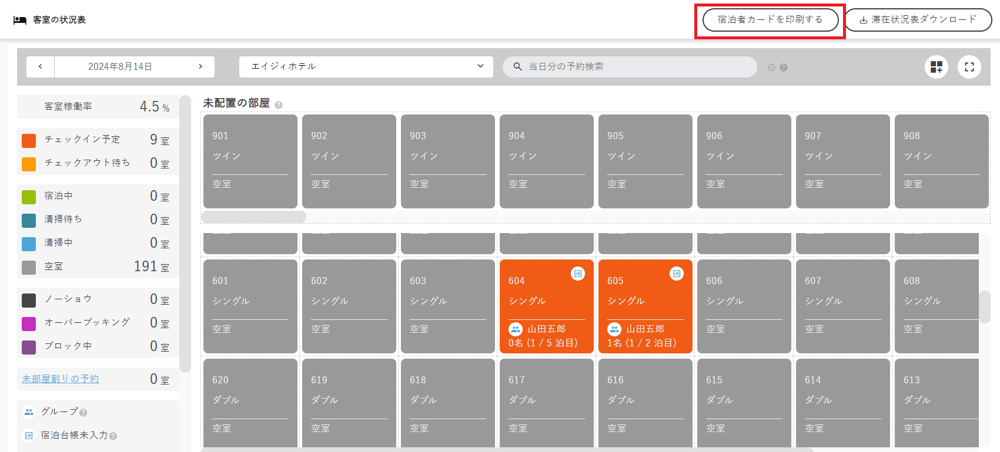
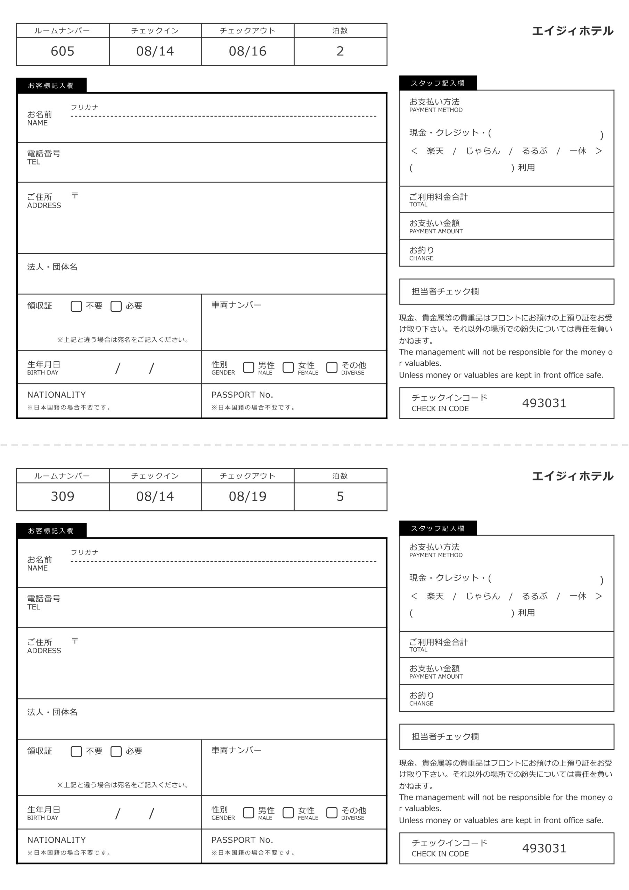
9Room blocks
物件管理 ＞ 部屋情報 ＞ 詳細を見る ＞ ブロック設定 (Property management > Room information > View details > Block settings)
When you want to stop using a room for a while, for example for maintenance or broken equipment, use the block feature. A blocked room can no longer be assigned to reservations.
Blocks are set in 〖ブロック設定〗 (Block settings) on each room's details screen. They could not be set from the cells of the room allocation chart (checked 2026-10-07).
- In the list under 【物件管理】＞【部屋情報】 (Property management > Room information), press 「詳細を見る」 (View details) for the room you want to block.
- In 〖ブロック設定〗 (Block settings), press 「ブロック期間を追加する」 (Add block period) to add a row.
- Press the period field, choose the start and end dates on the calendar, and press 「OK」. Enter the reason for the block in the memo field.
- Press 「変更を保存する」 (Save changes) to confirm.


A blocked room turns purple on the room allocation chart, and the memo is shown instead of the guest name (checked 2026-10-07).


Removing a block
In 〖ブロック設定〗 (Block settings) on the same room details, press 「×」 on the row to remove, then press 「変更を保存する」 (Save changes). No confirmation screen appeared (checked 2026-10-07).


In room selection for a reservation, a blocked room is marked with ×, like 「× 403」, and cannot be selected. On the room status chart too, a blocked room is purple with the memo 「ブロック中」 (Blocked), and it is counted in 「ブロック中」 (Blocked) on the left. Clicking it opens the room details in a new tab (checked 2026-10-09).


In the block period calendar, dates up to the day before the last closed day are gray and cannot be selected (e.g. at a hotel closed through 10/8, 10/7 and earlier) (checked 2026-10-09). The last closed day itself can be selected on the calendar, but whether a block that includes that day can be saved is not yet confirmed.

10Daily closing
売上管理 ＞ 日次締め機能 (Sales management > Daily closing)
The daily closing feature finalizes the reservation information for the date you close. It also moves the date of the room status chart forward.
First time only: an administrator enables the feature
- Open 【売上管理】＞【日次締め機能】 (Sales management > Daily closing).
- Check and select the target property and the daily closing time.
- Read the notes and run 「日次締め機能を有効化する」 (Enable daily closing).

When 「日次締め機能を有効化する」 (Enable daily closing) was pressed, the browser's standard confirmation dialog showed 「（物件名）の日次締め機能を有効化しますか？／一度有効化した場合、管理画面から無効化はできません。」 (Enable daily closing for (property name)? / Once enabled, it cannot be disabled from the admin screen.) (checked 2026-10-06).
- Confirm that the staff in charge can open the closing screen, and confirm the chosen time and operating rules.
Daily closing each day
The daily closing screen shows the date that has not been closed yet (the target date). After the closing time (daily 04:00 at the Annex), the 「日次の締めを行う」 (Run daily closing) button appears at the very bottom of the screen. Before the closing time the button is not shown, and closing does not happen automatically even after the closing time (checked 2026-10-07). On the daily closing screen, you can check reservations that need attention before closing, payment information and advance payment information. Use 「再取得」 (Reload) to load the latest state. The manager does the closing.
The 24 hours from the closing time are the property's "one day" (from the official manual). If the closing time is 04:00, a day runs from 04:00 to 03:59 the next day. Payments registered between midnight and before 4:00 go into the previous day's payment information. If a property has not closed the previous day, this is also shown in the notices area at the top right of the admin screen (from the official manual).

- After the closing time, open 【売上管理】＞【日次締め機能】 (Sales management > Daily closing) and bring it up to date with 「再取得」 (Reload).
- Check whether any reservations need action before closing. If any do, those reservations and their error messages are shown. Click the check-in code shown to open the reservation details and deal with it.
- The payment information shows amounts by payment method; check that they match the cash register. Reservation amounts and non-reservation amounts (予約外_料金・精算 (Non-reservation charges/payments)) appear on separate rows, so add them up and compare with the register. Also check that no payment has a blank payment date (from the official manual).
- Also check the advance payment information, and if there are no problems in steps 2 and 3, press 「日次の締めを行う」 (Run daily closing) at the very bottom of the screen. If there is a problem, deal with it first, then press it.
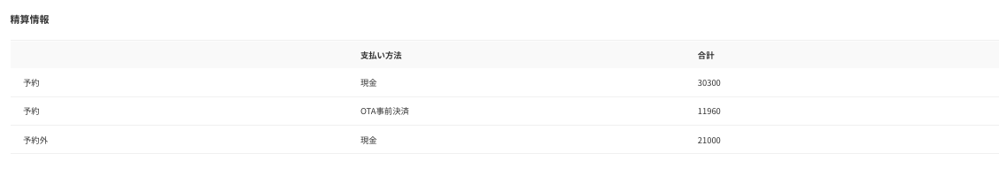
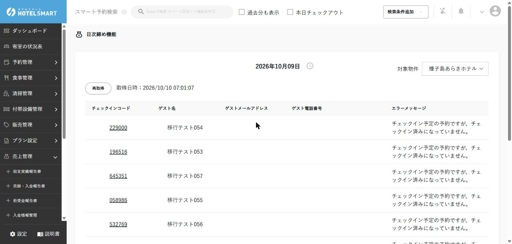

When you press 「日次の締めを行う」 (Run daily closing), the browser's standard confirmation dialog shows 「（物件名）の（日付）分の売上・売掛金を締めますか？」 (Close sales and accounts receivable for (date) at (property name)?). Pressing OK moves the target date to the next day. At the Annex, a 「集計処理中期間」 (Tally in progress) display appeared (checked 2026-10-07), but at Tanegashima Araki Hotel it did not (checked 2026-10-10). According to the official manual, 「集計処理中期間」 (Tally in progress) is shown until the tally of post-closing reports (such as the income and expenditure results report) is finished, and when it finishes you are notified in the notices area at the top right of the admin screen (and by email if set up). The difference between properties is probably due to when the tally finished (not confirmed).

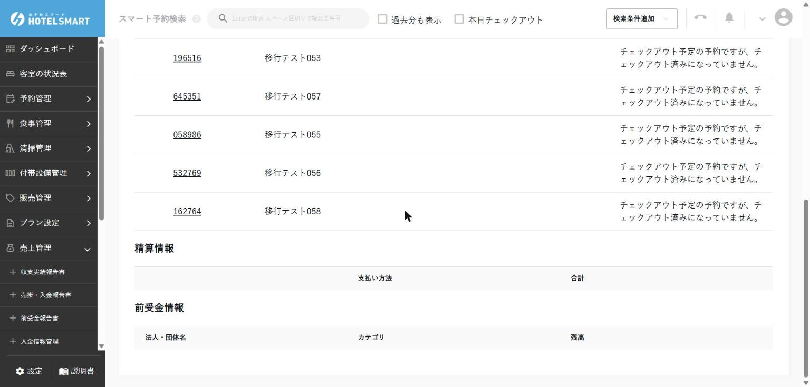
| Missed check-in | Example: 「チェックイン予定の予約ですが、チェックイン済みになっていません。」 (This reservation is due to check in but has not been checked in.) If the guest has arrived, do the check-in (Scene 8). If the guest has not come, handle it as a no-show or cancellation according to the property's rules (Scene 4 "Canceling a reservation"). If you close while it is a no-show, it stays in sales. If you are going to cancel it, do so before closing (after closing, the cancellation status cannot be changed) (from the official manual). |
|---|---|
| Outstanding balance remaining | Example: 「チェックアウト予定の予約ですが、未収金が残っています。」 (This reservation is due to check out but has an outstanding balance.) (checked 2026-10-10) Check the charge details and payment information, and register the payment (Scene 6). |
| Checked out but outstanding balance | (An item in the official manual. The wording on Araki Hotel's real screen is not yet confirmed) The payment was not registered after check-out. Check the charge details and payment information, and register the payment (Scene 6). |
| Overpayment remaining | (An item in the official manual. The wording on Araki Hotel's real screen is not yet confirmed) More has been paid than the charges. Check for a payment registered twice or a missing charge, and bring the difference to 0 by refunding or correcting the charges. Consult the manager about what to do. |
After closing
When closing is done, the date of the room status chart moves to the next day. Until you close, the room status chart's date stays on the unclosed day (checked 2026-10-07). The reservation details for a closed day show 「チェックイン日時が日次締めされているため、変更できません。」 (Cannot be changed because the check-in date has gone through daily closing.), and dates, rate plan and so on can no longer be changed (checked 2026-10-06).